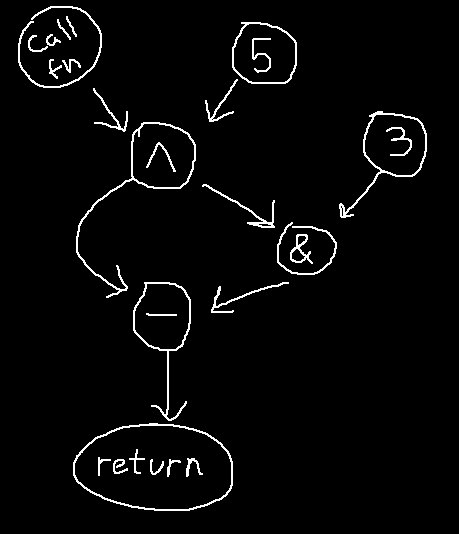
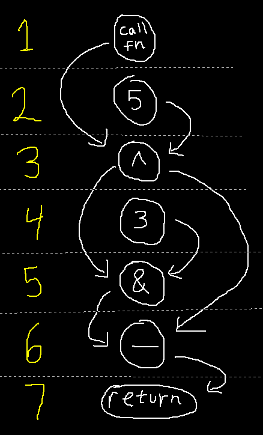
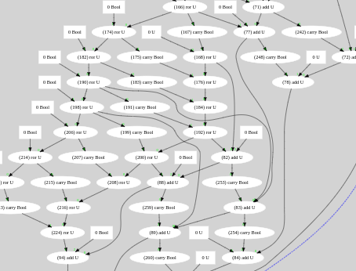
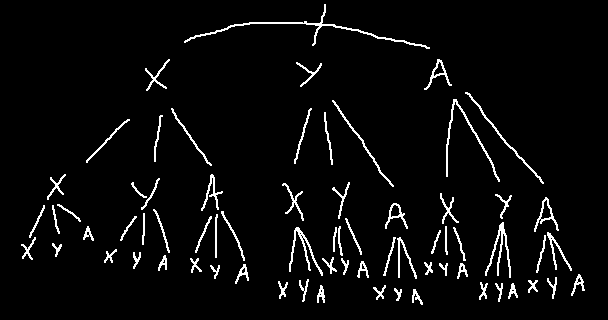
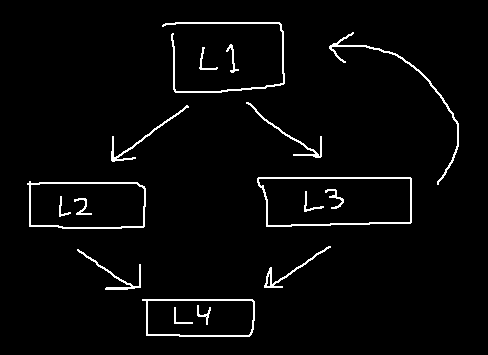
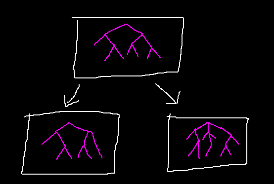
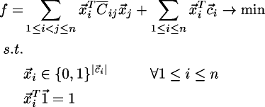
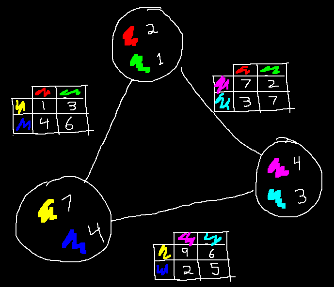
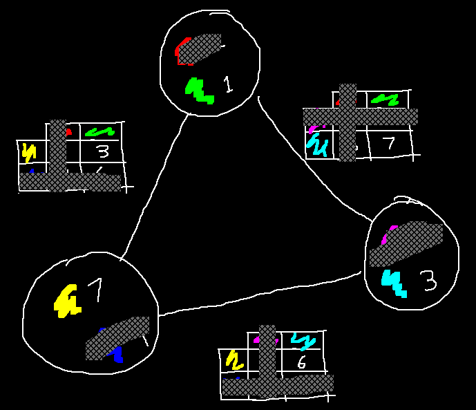

To learn how optimizing compilers are made, I built one targeting the 6502 architecture. In a bizarre twist, my compiler generates faster code than GCC, LLVM, and every other compiler I compared it to.

I reckon my compiler isn't doing more when it comes to high-level optimizations, so the gains must be from the code generation side. This makes sense, as most compilers are multi-target, with backends designed for modern RISC-like systems, not the ancient 6502. It doesn't matter how good GCC or LLVM's high-level optimizations are if they falter at the last leg of the race.
Still, my compiler also beats those designed for retro and embedded systems, like VBCC, SDCC, and KickC. For this reason, it seemed like a good idea to write about my technique.
Before I get into it, I want to cover three areas my compiler has an advantage, which aren't tied to algorithmic design. I call these my "cheats", as other compilers could do these things, but there are trade-offs involved.
First, my compiler generates what are know as "illegal" instructions. An illegal instruction is one which isn't officially documented by the manufacturer, but still exists in the hardware. On most 6502 chips, a few illegal instructions exist which combine the behavior of two "legal" instructions. Their use can save a few cycles, but not every backend generates them.
Second, some of my compiler's gains can be explained by its computational effort. My compiler spends the majority of its CPU budget (a few milliseconds) doing instruction selection, but not all compilers do. Typically, the more time spent searching for a solution, the better the results.
Lastly, there is loop unrolling and other optimizations that trade space efficiency for speed, which is hard to compare fairly when benchmarking different compilers. I tried to pick tests which weren't affected by this, but obviously I can't be perfect.
With my conscience clear, onto the algorithm!
I've been calling my own attempt "outsider art", as I didn't know much about code generation when writing it. In fact, the technique didn't even originate in my compiler; I based it on an old animation system I wrote years prior. My algorithm is interesting because it combines instruction selection with register allocation, but also because it's written using continuations. In all my years of programming, it's the only practical use I've found for such black magic.
To briefly explain how it works, I'll say that each basic block in my IR is represented as a DAG in SSA form. The first step of code generation is to break both of these properties, converting basic blocks to totally-ordered lists that do not contain phi nodes.
The ordered basic blocks are then processed from beginning to end, generating multiple assembly code combinations per operation. The list of combinations will grow at an exponential rate, but most can be pruned using ideas from dynamic programming and branch-and-bound.
To improve the generated code, output states of each basic block are fed into their successor blocks as inputs. This process repeats until a fixed point is reached. A cooling schedule a-la simulated annealing is applied to find results faster.
After this, each basic block will have multiple code sequences to choose from. The most expensive ones can be heuristically pruned, then a good selection can be made by solving a partitioned boolean quadratic problem (PBQP).
Finally, additional instructions are inserted as transitions between the basic blocks, and a few optimization passes are run on the resulting assembly code for good measure.
As stated, the IR of each basic block is a DAG in in SSA form, which sounds complicated until you see a picture of it.
Given the code below:
foo = fn() ^ 5 return foo - (foo & 3)
The IR DAG would look like this:
Each node in the graph represents a value, with edges denoting the flow of data.
To compute a value, the nodes pointing to it must be computed first —
e.g. to compute the node labeled (&), the nodes (^) and (3) must be computed first.
It's a dependency graph.
The first step of code generation is to take the IR and create a total order out of its nodes, positioning each node to occur after its dependencies. This is akin to putting each node on a number line such that every edge points in the same direction (downwards in the diagram).
The generated assembly code will follow this order.
It's easy to do using a topological sort, but there's a problem: DAGs can have multiple valid orderings, and some will generate better code than others.
To find a good ordering (one which generates efficient code), the topological sorting algorithm is still used, but it can be modified using a few heuristics. First, "fake" edges can be added to the graph to constrain nodes to occur after other nodes. Second, a greedy algorithm can be used to influence the traversal order of the topological sort. In my compiler, I prioritize nodes which form the longest path through the graph, which produces an ordering that has small live ranges, resulting in less register pressure and stores.
With the IR prepared, now it's time to generate some assembly code. I mentioned earlier that my algorithm was based on an animation system, and although that sounds weird and unrelated, it will be easier for me to explain the animation system first and then extend it to work like my compiler.
The animation I'm talking about was for a NES game. On that system, animation can be done by loading a new tileset into video memory each frame, overwriting the previous frame's tileset.
Most games accomplish this using special hardware on the cartridge called a mapper, which lets the system page a tileset into video memory quickly. But in my case, I was making a game that wasn't going to use that piece of hardware. Instead, I had to copy the bytes using the CPU as a middle-man.
The obvious way to copy bytes is with a loop (think "memcpy" from C), but this turned out to be too slow. For each iteration, too much time was being spent incrementing, then comparing, then branching back to the loop.
The only way I could see it working was if I unrolled the loop — not once — but fully. For example, if I wanted to copy the byte sequence (10, 20, 30) to video memory, I could write assembly code like this:
lda #20 ; Load constant: 20 sta PPUDATA ; Upload to video RAM lda #30 ; Load constant: 30 sta PPUDATA ; Upload to video RAM lda #40 ; Load constant: 40 sta PPUDATA ; Upload to video RAM
In other words, I was writing code like a noob who quit programming class before learning what a for-loop was. But it was fast, and that's what mattered.
Rather than writing these sequences by hand, it was clear I should automate it. A naive approach would be to write a script which generates one load and one store per uploaded byte, but it's possible to do better. As registers preserve their values, a sequence like (1, 8, 1, 8, 1, 8) requires only two loads:
ldx #1 ; Load register X lda #8 ; Load register A stx PPUDATA ; Upload register X to video RAM sta PPUDATA ; Upload register A to video RAM stx PPUDATA sta PPUDATA stx PPUDATA sta PPUDATA
How does one determine these loads optimally?
To keep things simple, I'll first explain how to solve this for a CPU with one register, then expand to a CPU with three.
For a CPU with one register, the algorithm boils down to finding redundant loads and eliding them. By redundant load, I mean a load which has no effect, like the second load below:
lda #10 sta PPUDATA lda #10 // redundant sta PPUDATA
Finding and eliding redundant loads is easy to do; just keep track of the previously loaded value. The pseudocode below does just that, optimally:
prev = -1
for each byte to upload:
if prev != byte:
emit_load(byte)
prev = byte
emit_store()
This idea can almost be extended to use three registers by using three "prev" variables instead of one. You might approach it using a struct or record type to keep things clean:
struct cpu_state
{
int a
int x
int y
}
Unfortunately, there's a problem. Although we can keep track of each register this and elide stores, it's not clear how we should handle loads. Given a value not found in any register, which register should load it?
We can make these decisions optimally by generating assembly code for every possible combination of loads (brute force) and only keeping the best one, but this quickly becomes infeasible. For each byte that needs loading, there are three choices possible. The number of combinations will grow at an exponential rate.
Luckily, this brute-force approach is still usable if a trick is used. It's possible to prune most combinations, shrinking the size of the search space.
If two pieces of assembly code have been generated, and both have the same observable side effect, the higher costing one can be pruned. By side effects, I mean that both upload the same byte sequence and finish with identical register states. For example, these two pieces of code are equivalent:
lda #1 sta PPUDATA ldx #2 stx PPUDATA ldy #3 sty PPUDATA sta PPUDATA
ldy #1 sty PPUDATA ldx #2 stx PPUDATA ldy #3 sty PPUDATA lda #1 sta PPUDATA
Both upload the sequence (1, 2, 3, 1), and both leave the registers at (A = 1, X = 2, Y = 3). The second one requires an extra load though, so it can be pruned.
Keep in mind that this works for partial snippets of code too. Instead generating entire code sequences and comparing them, it's possible to generate the code instruction-by-instruction and compare at each step.
To implement this, the algorithm will handle the combinations in a breadth-first fashion. It will first generate all the combinations for the first byte and prune some, then it will generate all the combinations for the second byte and prune some, and so on. The pruning is done by storing the results in a hash table, indexed by each combination's "cpu_state" (the struct introduced earlier).
For better performance, an additional method of pruning will be used. If we keep track of the current best combination at each iteration step, we can prune other combinations that are slower by three or more loads. This preserves optimality of the final result, as three loads is enough to convert from any "cpu_state" to another.
Putting all this together, the algorithm to elide loads in a 3-register CPU becomes:
prev_hash_map.clear()
for each byte to upload:
next_lowest_cost = INFINITY
next_hash_map.clear()
for each combination in prev_hash_map:
if combination.cost >= prev_lowest_cost + 3: // Second method of pruning
continue
for each register (A, X, Y):
new_combination = combination
if new_combination.cpu_state.register != byte:
new_combination.code.append_load()
new_combination.cost += 1
new_combination.cpu_state.register = byte
if combination.cost < next_lowest_cost:
next_lowest_cost = combination.cost
next_hash_map.insert(new_combination)
if next_hash_map already had this cpu_state: // First method of pruning
Keep the lowest-costing one
swap(next_hash_map, prev_hash_map)
prev_lowest_cost = next_lowest_cost
(If you want to see actual code, I've put a C++ implementation here and here.)
Alright, alright. . . we can generate code for animations — So what? This is an article about compilers, right?
Well, consider this: Instead of processing a sequence of bytes with this algorithm, let's process the sequence of IR operations created earlier.
Here's the ordered sequence of IR operations, from earlier. I've added variable names (Q, R, S, T) as placeholders for each node:
Q = call fn R = Q ^ 5 S = R & 3 T = R - S return T
Like we did for the sequence of bytes, we can generate combinations per operation and prune the worst ones, but there are two big differences:
Putting this into practice, I'll show how the algorithm handles the ordered IR. The algorithm starts by generating combinations for the first operation: "call fn", which there is only one:
; call fn:
jsr fn ; Call the function
sta Q ; Store the result into variable Q
; cpu_state is now (A = Q, X = ?, Y = ?)
After that, it will generate the combinations for the XOR operation (^). There's a single assembly instruction which does this: "EOR", but since XOR is commutative, two code combinations exist:
; call fn:
jsr fn ; Call the function
sta Q ; Store the result into variable Q
; cpu_state is now (A = Q, X = ?, Y = ?)
; xor:
lda #5 ; Load 5 into register A
eor Q ; XOR register A with variable Q
sta R ; Store the result into variable R
; cpu_state is (A = R, X = ?, Y = ?)
; call fn:
jsr fn ; Call the function
sta Q ; Store the result into variable Q
; cpu_state is now (A = Q, X = ?, Y = ?)
; xor:
eor #5 ; XOR register A with variable 5
sta R ; Store the result into variable R
; cpu_state is (A = R, X = ?, Y = ?)
The second combination does not need a load instruction for the Q variable, as it's already loaded in the register. Since both of these code sequences have the same side effect, the first combination will be pruned.
Now, for the AND operation (&). While there is an AND instruction, there's also an illegal instruction called SAX, which perform a bitwise AND of register A with register X and stores the result. This results in four combinations, so I'll only show the two that won't get pruned:
; call fn:
jsr fn ; Call the function
sta Q ; Store the result into variable Q
; cpu_state is now (A = Q, X = ?, Y = ?)
; xor:
eor #5 ; XOR register A with variable 5
sta R ; Store the result into variable R
; cpu_state is (A = R, X = ?, Y = ?)
; and:
and #3 ; AND register A with 5
sta S ; Store the result into variable S
; cpu_state is (A = S, X = ?, Y = ?)
; call fn:
jsr fn ; Call the function
sta Q ; Store the result into variable Q
; cpu_state is now (A = Q, X = ?, Y = ?)
; xor:
eor #5 ; XOR register A with variable 5
sta R ; Store the result into variable R
; cpu_state is (A = R, X = ?, Y = ?)
; and:
ldx #3 ; Load 3 into register X
sax S ; Store the AND of registers A and X into variable S
; cpu_state is (A = R, X = 3, Y = ?)
For the subtraction operation (-), the SBC instruction will be used following a SEC instruction to set the carry flag. As subtraction isn't commutative, there's only one way to do this, but since the previous operation generated two combinations, this operation will result in two combinations too.
; call fn:
jsr fn ; Call the function
sta Q ; Store the result into variable Q
; cpu_state is now (A = Q, X = ?, Y = ?)
; xor:
eor #5 ; XOR register A with variable 5
sta R ; Store the result into variable R
; cpu_state is (A = R, X = ?, Y = ?)
; and:
and #3 ; AND register A with 5
sta S ; Store the result into variable S
; cpu_state is (A = S, X = ?, Y = ?)
; subtract:
lda R ; Load R into register A
sec
sbc S ; Subtract S from register A
sta T ; Store the result into variable T
; cpu_state is (A = T, X = ?, Y = ?)
; call fn:
jsr fn ; Call the function
sta Q ; Store the result into variable Q
; cpu_state is now (A = Q, X = ?, Y = ?)
; xor:
eor #5 ; XOR register A with variable 5
sta R ; Store the result into variable R
; cpu_state is (A = R, X = ?, Y = ?)
; and:
ldx #3 ; Load 3 into register X
sax S ; Store the AND of registers A and X into variable S
; cpu_state is (A = R, X = 3, Y = ?)
; subtract:
sec
sbc S ; Subtract S from register A
sta T ; Store the result into variable T
; cpu_state is (A = T, X = 3, Y = ?)
Lastly, the return operation, which is implemented with a single RTS instruction. This one is so simple, I'm not going to illustrate it with a code example. Simply imagine a "RTS" appended onto the end of the previous two combinations.
Once the combinations have been run, the algorithm selects the lowest-costing one. In this case, it's the one that uses a SAX instruction instead of AND, as it requires one less instruction.
The resulting selection looks like this, but we're not done yet:
jsr fn sta Q eor #5 sta R ldx #3 sax S sec sbc S sta T rts
The issue is, most of these store instructions are unecessary, as nothing will ever load them. To fix this, an extra pass is run which identifies stores that are never loaded. This results in the final code:
jsr fn eor #5 ldx #3 sax S sec sbc S rts
In the actual compiler, the code generator is a bit smarter about stores, and can usually estimate if they're needed or not while generating the combinations. This is important, as the presence of a store influences a combination's cost.
As shown, compiling an IR operation boils down to generating a bunch of combinations. However, if you were write code to translate IR operations into assembly combinations, you'd find it to be a repetive, menial coding task.
The issue relates to the number of combinations. For each IR operation, there will be a few valid instructions that can implement it, and each of those instructions will have its own variants, resulting in more combinations. Multiply these together (and double it for communicative operations), and you'll end up with a lot of combinations per IR operation.
It would be nice to abstract these details away and create building blocks for implementing operations. Luckily, I found a solution by using continuations.
Each step (or "building block") will be implemented as a function written in continuation-passing style. Instead of returning, these functions will call their continuations with each instruction they want to generate a combination for. For example, to generate three combinations, the continuation will be called three times with three different instructions.
Here's how a function for loading a value in register A might look, in pseudocode:
load_A(desired_value, cpu_state, continuation)
if cpu_state.A == desired_value
continuation(cpu_state, NOP)
else if cpu_state.X == desired_value
continuation(cpu_state, TXA)
else if cpu_state.Y == desired_value
continuation(cpu_state, TYA)
else
continuation(cpu_state, LDA)
continuation(cpu_state, LAX)
If the value is already present in one of the registers: either nothing happens (NOP), or a transfer between registers occurs (TXA, TYA). Otherwise, two combinations will occur: one using the LDA instruction, and another using the LAX instruction.
The point of writing functions like this is that they can be composed. With a bit of plumbing, it's possible to end up with a domain-specific language that resembles:
compose(load_A(L), load_X(R), instruction(SAX))
A single line like this can cover 50 different assembly sequences, all handling different combinations of instructions and addressing modes. It's much easier to write than trying to enumerate all the possibilities by hand.
Although the algorithm I've described is tied to basic blocks, it can handle control flow (branches, loops, etc) too. Branch operations are not special — they generate assembly combinations like any other.
For example, take a look at this control flow graph (the rectangles are basic blocks):
Each basic block in this graph will be assigned a unique label name (L1, L2, L3, etc).
Now we'll generate the code for each basic block separately, implementing control flow as instructions involving these labels. Once every basic block has its code generated, we can concatenate the results:
L1:
; (More code would go here)
beq L1 ; Branch instruction
bne L2
L2:
; (More code would go here)
jmp L4 ; Jump instruction
L3:
; (More code would go here)
beq L1
bne L4
L4:
; (More code would go here)
rts
With this implemented, the compiler now works. It can generate executables!
The process above works, but does not produce good code across basic block boundaries. The issue stems from compiling basic blocks separately without sharing knowledge of the register states between them. If one basic block needs a value from a previous block, it will emit a load instruction even if it's redundant.
For example, this is how a loop would look:
L0:
ldx #0 ; Load register X with 0
stx I ; Store variable I
L1:
ldx I ; Load variable I
inx ; Increment register X
stx I ; Store variable I
bne L1 ; Branch if register X is not zero
But this is how a loop should look:
ldx #0 ; Load register X with 0
L1:
inx ; Increment register X
bne L1 ; Branch if register X is not zero
The second loop lacks redundant loads.
To solve this, the final "cpu_state" from basic blocks need to be shared. This can be done by passing each basic block's result into its successors as input.
This is an iterative process where each node can be processed multiple times. When a node is processed, it will trigger its successors to be processed next passing outputs as inputs. This will repeat until a fixed point is reached.
Going back to the loop example, initial iterations will produce inefficient code, but later iterations will propagate the register states through the loop from (L3) to (L1). Once variable "I" appears pre-loaded in register X, optimal code will follow.
To expedite this process, it's beneficial to only pass the lowest-costing results along and get stricter each iteration. This resembles simulated annealing.
Although the method above generates improved code, it's no longer possible to get a working program by concatenating the lowest-costing combinations. The issue is, each code combination now expects some specific register values as inputs, but the output of one combination may not correspond to the input of another. You could get nonsensical results like initializing a loop variable using the Y register, but incrementing using the X register:
; This code is incorrectly compiled!
L0:
ldy #0 ; Output Y as the iteration count
; NOTE: A sty instruction was removed by the "remove unused stores" pass.
L1:
; Input X as the iteration count
inx
bne L1
To fix this, the input states of each basic block must match the output states of their predecessors. If there is a discrepency, a load can be inserted to correct it.
By inserting loads, the code becomes:
L0:
ldy #0
sty I ; This store is no longer removed.
L1_entry:
ldx I ; Inserted load
L1:
inx
bne L1
Which works, but isn't ideal.
The woes above are caused by selecting only the lowest-costing combinations per basic block, without taking into consideration the compatability between input/output states. Ideally, we'd factor in the cost of inserted loads.
Doing so is an optimization problem, and one which closely maps to the Partitioned Boolean Quadratic Problem (PBQP). If we can solve a PBQP problem, we can select optimal combinations for our basic blocks.
Unfortunately, not much has been written on PBQP, and what does exist is hard to read for most:
My advice is that instead of struggling over equations, it's easier to learn PBQP by thinking visually, in terms of graphs.
Imagine a graph where each node has a finite list of choices, and each of those choices has a cost. The goal PBQP is to pick one choice for each node, minimizing the total cost. The catch is, an additional cost is incurred for every edge in the graph based on the choices made at the edge's vertices.
The picture below illustrates such a graph. Each node has a choice of two colors, and those colors have a cost next to them. When selecting two colors, the cost of the edge must be paid as well. This is done by looking up the cost in a table unique to each edge, using the two selected colors as keys.
Below, I've made some choices, and have crossed out everything I didn't choose. The total cost is the sum of the visible numbers, which is 3 + 1 + 7 + 3 + 6 + 7 = 27. The goal of PBQP is to find choices which minimizes this sum.
A fast algorithm exists to solve PBQP problems near-optimally. The algorithm works on the graph, reducing and combining nodes until none remain. At the end, the algorithm works backwards, using the steps it took to decide which choices to make.
Going back to the compiler, the problem I was describing fits perfectly into this visualization:
By implementing a PBQP solver and using it on our combinations, the end result will produce near-optimal code. The assembly loop which gave us trouble before will become:
ldx #0
L1:
inx
bne L1
Which is optimal.
This code generator has worked well enough for me. Although parts of it are hairy, the continuations make it easy to add new operations and I don't see much technical debt in the code. The generated assembly code has been good, albeit not perfect. As stated, it beat other compilers for the benchmarks I ran, but I'm sure others could beat mine as well. My only goal was to produce a good compiler, not the best.
As I mentioned in the beginning, I don't have deep knowlege of other code generation techniques. Most of the papers on code generation I've seen involve ILP / SAT solvers and take minutes, if not hours to compile a long function. Besides, everything nowadays is designed for RISC architectures, which is totally unlike the 6502. You might think that papers from the 1970s would be more useful, but in the 70s computers were sluggish and the algorithms designed for them were O(N) and compensating. You just don't see advice like "hash everything and run it a million times" back then.